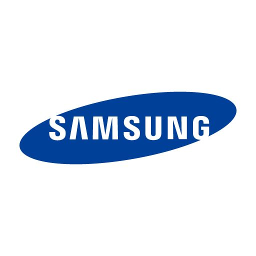

Para assim você escolher a marca que te agrade
O Iphone tem um sistema operacional próprio chamado iOS, que garante ser um sistema mais seguro e intuitivo de navegação. Porém, muito mais inflexível à utilização e compatibilidade com vários aplicativos.
Ele possui um sistema de domínio próprio e um maior controle de aplicativos. Ou seja, traz mais segurança aos usuários por não permitir a entrada de aplicativos não originais ou maliciosos.
Para saber mais: Tudo o que você precisa saber sobre o iPhone
A Samsung, uma das principais fabricantes de eletrônicos, é amplamente conhecida por sua linha diversificada de smartphones.
Desde os modelos da série Galaxy S até os dispositivos mais acessíveis da série Galaxy A, a empresa sul-coreana oferece uma ampla gama de opções para atender às necessidades e preferências de diferentes consumidores.
Para saber mais: Celular Samsung: tudo sobre o assunto e listas de produtos
A Xiaomi tem um amplo portfólio de produtos, de fones a aspiradores inteligentes, passando por smartwatches, airfryer e até itens para pets. Porém, ela é mais conhecida por seus smartphones, que têm especificações interessantes e preços atraentes.
Uma das maiores fabricantes de telefones do mundo, a gigante chinesa divide seus celulares entre três marcas. Além da principal Xiaomi, que traz dispositivos acompanhados pela nomenclatura “Mi”, há as versões fabricadas pelas subsidiárias Redmi e Poco.
Para saber mais: Xiaomi, Redmi e Poco: entenda as diferenças entre as marcas
Desenvolvido por Lais ©